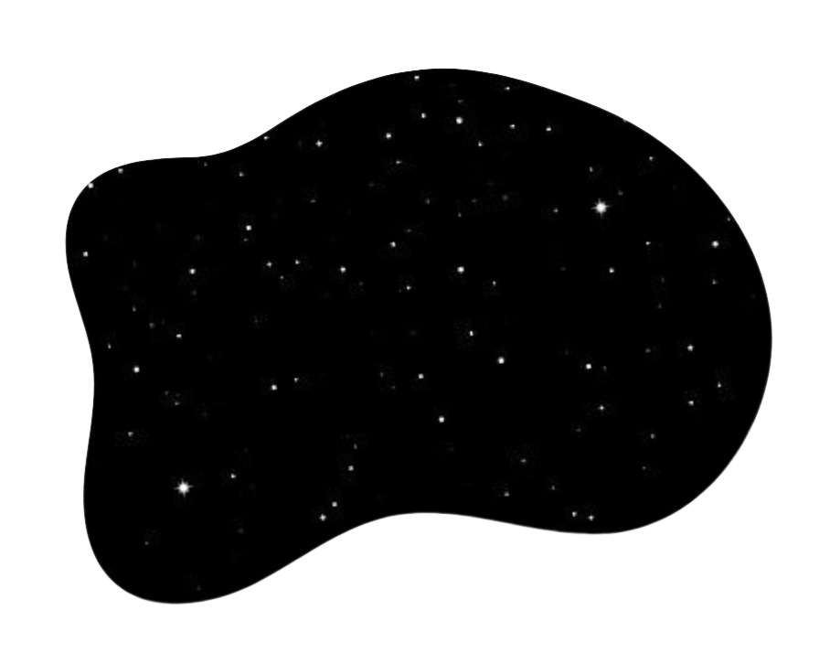
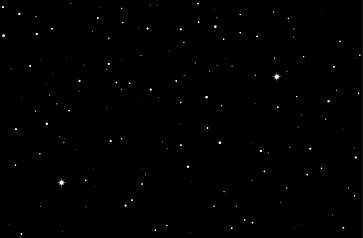

Rick and Morty é uma série animada de comédia que mostra as aventuras interdimensionais de
Rick, a mente mais brilhante da galáxia, e seu neto Morty. Com sua arma capaz de criar portais para
viajar no tempo/espaço, Rick leva Morty para explorar todas as absurdas formas de vida que o universo é
capaz de sustentar.